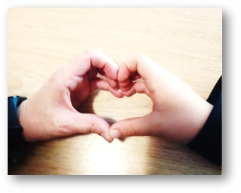

1977, Arouca
A Sara iniciou a sua carreira na Martifer em 2004 como contabilista administrativa. Em 2008 passou para o departamento de Controlo de Gestão e em 2012 voltou para o departamento de Contabilidade. Em 2013 passou a responsável pelo departamento.
Espírito de equipa, humildade, respeito e profissionalismo.
Estar com a família.
Mentira e falta de humildade.
O meu filhote Martim.
Gato.
Respeitar o próximo.
Às vezes falar sem pensar "ter o coração ao pé da boca".
Estar com a família.
O nascimento do meu filho Martim em 2013.
Todos os dias ao acordar veste o teu melhor sorriso, confiança e siga em frente.
Preparar informação credível, atempada, útil para a tomada de decisões económicas, apostando num eficaz planeamento fiscal que contribua para a obtenção de elevados índices de rentabilidade, tendo na base uma equipa motivada e satisfeita.
Não foi fácil, principalmente quando tínhamos colaboradores que estavam cá connosco e não nos viam “como chefia”, uma primeira vez propuseram-me ser chefia e recusei, só passado um ano é que outra pessoa me propôs e aceitei o desafio.
O maior desafio para mim está justamente em ter que lidar com o “mundo” dos colaboradores, compreendendo suas necessidades e agindo de forma a aliá-las aos objetivos organizacionais. Isso requer um trabalho árduo e constante de análise e busca por soluções cada vez mais inovadoras e eficazes.
Temos que alavancar e apoiar processos de gestão continuar a criar valor para a empresa mantendo a solidez financeira.
Manter um equilíbrio entre a produtividade e qualidade dos serviços. Manter os colaboradores motivados.